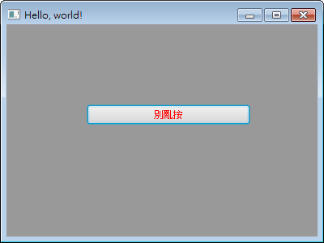

JavaFX CSS 圖形化介面樣式管理
JavaFX 可將控制項的外觀，另外使用簡單好用的 CSS 檔案來設計！
有了這項功能，不但可以避免為了修改控制項外觀而重新修改 Java 原始碼，甚至設定 CSS 樣式往往比建立一堆 Java 物件還快的關係，可以提升圖形化介面程式設計的效率[1]。
而且而且，網路有各式各樣的 CSS 檔任你下載來修改 JavaFX 圖形化介面外觀，輕輕鬆鬆就能設計出不同風格的應用程式。不但可以表現出令人懷念的 Windows XP 的視窗程式，把應用程式設計得像《魔獸世界》的操作介面也難不倒你～
使用 CSS 修改 JavaFX Application 的控制項樣式
本節示範如何使用 CSS 修改 JavaFX Application 的背景顏色、以及 Button 控制項的文字顏色。
Style.css
Main.java

執行時，Style.css 與 Main.class 放在一起，不是放在呼叫 main() 與 start() 的位置。
在 FXML 使用 CSS 樣式
很簡單，在 FXML 根元素用屬性設定 stylesheets="CSS 檔案" 就行了。
Style.css
Pane.fxml
Main.java
更多 JavaFX CSS 樣式
更多可用的 JavaFX CSS 樣式，請參考 Oracle 官方的《JavaFX CSS Reference Guide》。
這文件既是 Guide（說明書）也是 Reference（使用手冊），文章結構相當雜亂，不容易查閱到想要的功能。但多用幾次後，還是會發現固定規律，找到想要的功能。